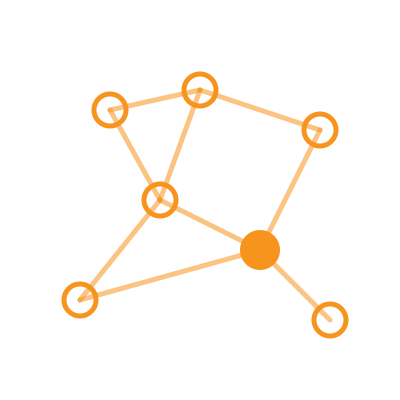

Commission rate
a number · difference · majority ½
Paper · ADT 2026
Ehud Shapiro and Nimrod Talmon
LSE and Weizmann Institute · Ben-Gurion University · November 2026

The problem
A community decides many kinds of things, each a different kind of object
Officers
A rate
A budget
Priorities
A board
Bylaws
The constitution
The approach
A fee and a rate: each option is a point in the plane
Each member votes for their ideal point
Anyone may add proposals
Adopt the best one a majority prefers to today
Which proposal is best?
My gain: how much closer the proposal is to me than today. Score: the middle gain.
The constitution
The constitution is one of its own entries, amended with a higher majority
Constitution
Commission rate
a number · difference · majority ½
Budget
a split · Euclidean distance · majority ½
Board
a set of members · members that differ · majority ½
This constitution
its own entries · per entry · majority ⅔
Simulations
Gray: how much better the best possible point is than the best member's point.
Orange: what an algorithm that blends two proposals recovers.
Guarantees
No cycles
Everything is compared with today
Fast
Polynomial time in all settings
Honest
On a line, voting your ideal point is best
Paper · ADT 2026
Ehud Shapiro and Nimrod Talmon
LSE and Weizmann Institute · Ben-Gurion University · November 2026